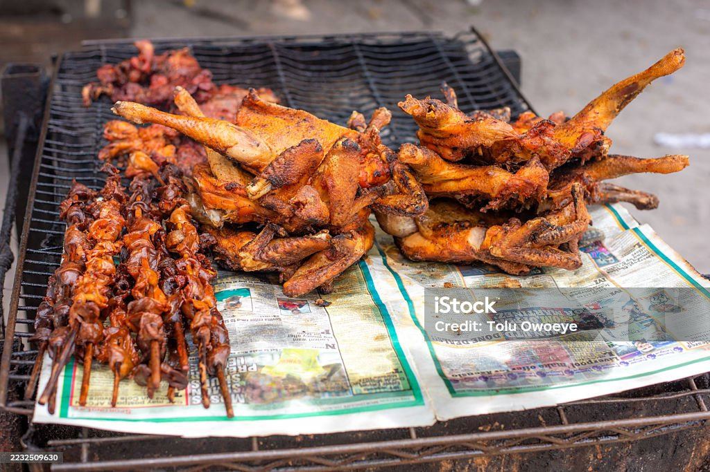
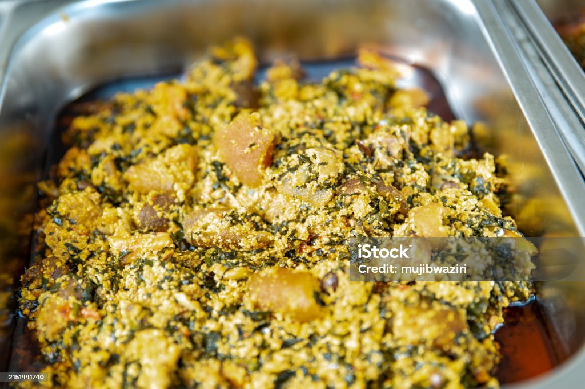

All Recipes
Jollof Rice

Prep Time: 15 mins | Cook Time: 45 mins | Total Time: 1 hr
Ingredients:
- 3 cups long-grain parboiled rice
- 5 tomatoes, 2 red bell peppers, 2 scotch bonnets
- 1 large onion (half blended, half sliced)
- 1 tbsp tomato paste
- Vegetable oil
- 2 cups chicken stock
- Curry, thyme, seasoning cubes, bay leaf, salt
- 1 tbsp butter (optional)
Steps:
- Blend tomatoes, peppers and scotch bonnets into a smooth puree.
- Heat oil, fry sliced onions, then add tomato paste and fry 5 mins.
- Add blended mixture and fry 10–15 mins until oil separates.
- Add chicken stock, curry, thyme, seasoning cubes, and bay leaf.
- Wash rice and add to pot.
- Stir, cover tightly, cook on low heat.
- Stir once, add butter, cover and steam 10–15 mins.
Stewed Chicken

Prep Time: 20 mins | Cook Time: 40 mins | Total Time: 1 hr
Ingredients:
- 1kg chicken pieces
- Tomato stew base (blended tomatoes, peppers & onions)
- Garlic, ginger
- Seasoning cubes, curry, thyme, bay leaf
Steps:
- Season chicken with garlic, ginger, curry, thyme, salt and onions.
- Boil chicken until tender, reserve stock.
- Heat oil and fry tomato stew base 15 mins.
- Add chicken stock and seasoning.
- Add chicken pieces, simmer 10 mins.
Fried Rice

Prep Time: 15 mins | Cook Time: 30 mins | Total Time: 45 mins
Ingredients:
- 2 cups rice
- Mixed vegetables (carrots, peas, sweetcorn)
- Diced chicken or liver
- Soy sauce, curry, seasoning cubes
Steps:
- Parboil rice and cook halfway.
- Stir-fry vegetables and meat.
- Add soy sauce and seasoning.
- Add rice and mix thoroughly, steam 5 mins.
Roasted Chicken Skewers
Ingredients:
- Diced chicken breast
- Skewers
- Paprika, garlic powder, black pepper, oil
Steps:
- Season chicken and marinate for 30 minutes.
- Thread chicken onto skewers.
- Roast or grill for 20–30 minutes, turning occasionally.
Pancakes

Ingredients:
- 1 cup flour, 1 egg
- ½ cup milk
- 2 tbsp sugar
- Butter
Steps:
- Mix flour, sugar, milk and egg into smooth batter.
- Heat butter in a pan.
- Pour a scoop of batter, fry both sides until golden brown.
Scrambled Eggs

Ingredients:
- Eggs, salt, butter, pepper
Steps:
- Crack eggs in a bowl and whisk with salt.
- Heat butter in a pan on low heat.
- Pour eggs and stir gently until fluffy.
Sausage

Ingredients:
- Sausages
Steps:
- Pan‑fry sausages in a lightly oiled pan.
- Turn occasionally until browned evenly.
Egusi (Melon) Soup
Ingredients:
- 2 cups blended melon seeds
- Palm oil
- Ugu or spinach
- Beef, fish, stockfish
- Crayfish, seasoning cubes
Steps:
- Heat palm oil, add blended melon and fry for 5–7 minutes.
- Add stock and stir until thick lumps form.
- Add meat, fish and crayfish.
- Add vegetables and simmer 5 minutes.
Semo
Ingredients:
- Semo flour, water
Steps:
- Boil water until hot.
- Pour semo gradually while stirring.
- Stir until smooth and firm.
Cake

Ingredients:
- Flour, sugar, butter, milk
- Baking powder
Steps:
- Cream butter and sugar until fluffy.
- Add eggs and mix.
- Add flour and baking powder.
- Bake at 180°C for 30–40 minutes.
Meat Pie

Ingredients:
- Flour, butter, cold water
- Minced meat, carrot, potato
Steps:
- Mix flour and butter into crumbs.
- Add cold water to form dough.
- Cook minced meat filling with veggies.
- Fill dough, fold and bake.
Sausage Roll

Ingredients:
- Dough (flour & butter), sausages
Steps:
- Roll dough into a rectangle.
- Place sausage and roll tightly.
- Bake until golden.
Doughnuts

Ingredients:
- Flour, yeast, sugar, milk
Steps:
- Knead dough
- Shape
- Fry till golden brown